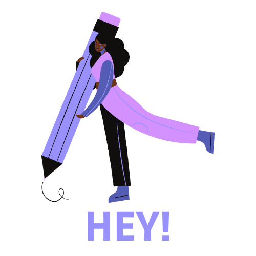

Home

1Introduction
Welcome to our informative website, we are Hey!, on our page you will find our objectives, history, about us, the way in which you can contact us and some other things.
2One more thing before start
We present our logo, it is the one on the left and describes a large part of what our application consists of, which in a while you will be able to use it.